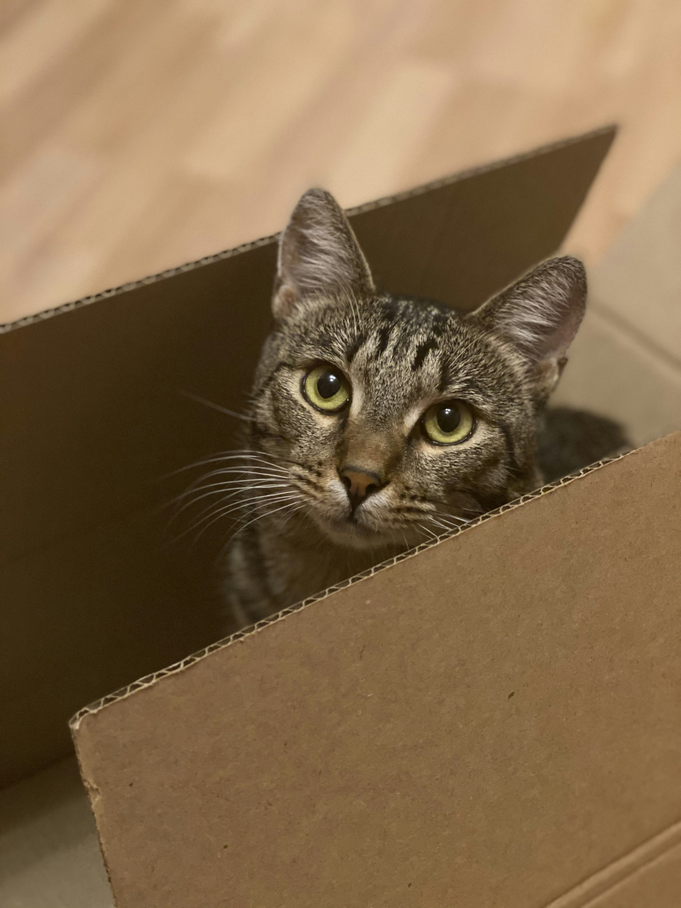

This is a heading for the page
Text taken from Wikipedia: Subnautica is a 2018 action-adventure survival game developed and published by Unknown Worlds Entertainment. The player controls Ryley Robinson, a survivor of a spaceship crash on an alien oceanic planet, which they are free to explore. The main objectives are to find essential resources, survive the local flora and fauna, and find a way to escape the planet.
Subnautica was released in early access for Windows in December 2014, macOS in June 2015, and Xbox One in May 2016. The game was released out of early access in January 2018 for macOS and Windows, with versions for PlayStation 4 and Xbox One in December 2018. The physical console versions were published by Gearbox Publishing. The Nintendo Switch, PlayStation 5, and Xbox Series X/S versions were released in May 2021. It received generally positive reviews from critics and sold over 5 million units by January 2020. A spin-off, Subnautica: Below Zero, which was originally meant to be downloadable content for the base game, was released in May 2021. A direct sequel, Subnautica 2, is planned to release in early access sometime in 2025.